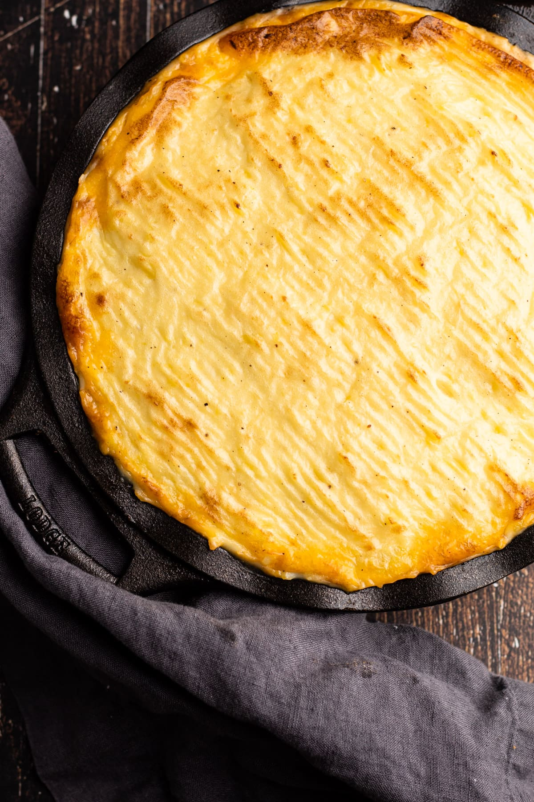

This one is a man's meal!
"Anything with a layer of mashed potatoes has to be good right? This hearty meal is full of beef
and vegetables. Perfect for a cozy winter's night."
Ingredients
- 3 tbsp. olive oil
- 2 lbs ground beef (or bison if you prefer)
- 3 tbsp. unsalted butter
- 1 yellow onion (diced)
- 2-3 carrots (peeled and cut into small circles)
- 4 cloves of garlic
- 1 1/2 tsp. dried oregano
- 1 tbsp. salt
- 3-6 tbsp. tomato paste (I use 4)
- 3/4 cup of beef stock
- 1 tsp. Worcestershire
- 1/2 tsp. black pepper
- 1 cup frozen corn (thawed)
- 1 cup frozen peas (thawed)
- 1 cup frozen green beans (thawed)
- 3-4 cups of mashed potatoes (I make my own but you don't have to)
- 1/3 cup of grated parmesan
- fresh parsley (for topping)
Steps
-
Preheat the oven to 375 degrees.
-
In a skillet over medium heat, add oil and ground beef and cook for 4-5 minutes while breaking into small crumbles.
Transfer to a plate or bowl and set aside.
-
With the skillet still hot, add butter. Add onion, carrots, garlic, oregano, and half the salt. Cook for 8-10 minutes.
-
Add tomato paste and cook for another 5-7 minutes. This really brings out the tomato flavor.
-
Return the ground beef to the skillet and add Worcestershire, beef stock, and the remaining salt and pepper.
Let it simmer for a bit to combine everthing.
-
Take the thawed corn, peas, and green beans and mix together to form a vegetable medley.
-
Transfer the beef mixture to a greased baking dish (or keep in skillet if you can put it in the oven) and form a uniform layer.
Add the vegetable medley as the second layer. Finally, add the mashed potatoes as the top layer and spread with a fork or
spoon to make even.
-
Use the fork to line the potatoes and add parmesan to the top. Bake for 40-45 minutes or until potatoes have a brown crisp.
Let cool for 5-10 minutes. Sprinkle with parsley and serve hot!
Return to top
Return to recipes